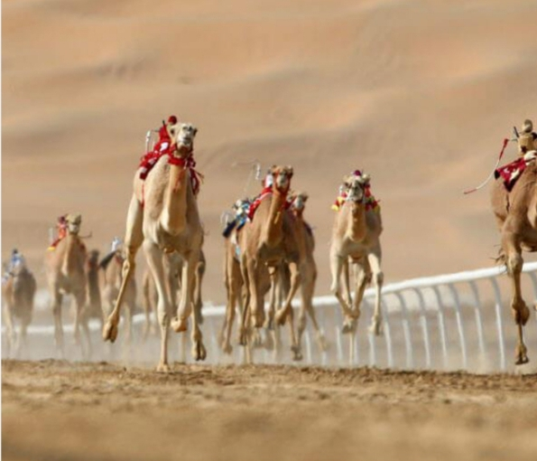

Wonder's Of Dubai
.jpg "UAEflag")
Here are some Wonder's of Dubai definitely you would like to know ....so guys get ready and join us
....Here it
come's ...
p2
BURJ KHALIFA
Go forward
- Tallest Skyscraper: The Burj Khalifa is currently the tallest skyscraper in the world, standing at a height
of 828 meters (2,717 feet). It surpassed the previous record holder, Taipei 101, when it was completed in
2010.
- Architectural Design: The design of the Burj Khalifa was inspired by Islamic architecture, particularly the
shape of the Hymenocallis flower. The building features a stepped design that gradually narrows as it
reaches the top.
- Construction Time: The construction of the Burj Khalifa took approximately six years, from 2004 to 2010. At
the peak of construction, around 12,000 workers were involved in the project.
- Elevator Speed: The Burj Khalifa has some of the fastest elevators in the world, capable of reaching speeds
of up to 10 meters per second (33 feet per second). These elevators can transport visitors to the
observation deck on the 148th floor in just over one minute.
- Observation Decks: The Burj Khalifa has two observation decks located on the 124th and 148th floors. The
observation deck on the 148th floor, known as "At the Top Sky," is the highest outdoor observation deck in
the world.
- Dubai Fountain: At the base of the Burj Khalifa, there is the Dubai Fountain, which is the world's largest
choreographed fountain system. It shoots water up to a height of 150 meters (490 feet) and features
performances accompanied by music.
- Lighting System: The exterior of the Burj Khalifa is adorned with an advanced LED lighting system consisting
of around 300 projectors and 1.2 million LED lights. The lighting system is used to create stunning light
displays and patterns during special occasions and events.
- Sustainable Features: The Burj Khalifa incorporates several sustainable features to reduce its environmental
impact. It has a condensate collection system that collects water from the building's cooling equipment,
which is then used for irrigation purposes.
- Record-Breaking Feats: Besides being the tallest building, the Burj Khalifa holds several other world
records, including the highest outdoor observation deck, highest occupied floor, and the elevator with the
longest travel distance.
- Popular Tourist Attraction: The Burj Khalifa has become a popular tourist attraction in Dubai, attracting
millions of visitors each year. It offers breathtaking views of the city skyline and the surrounding area
from its observation decks.
- Structural Stability: The Burj Khalifa is designed to withstand high winds and seismic forces. Its Y-shaped
floor plan helps to reduce wind forces, and the building's spire acts as a counterweight, providing
stability.
- Reinforced Concrete: The building's construction primarily consists of reinforced concrete, which was poured
in place using a specially designed system. Over 45,000 cubic meters (58,900 cubic yards) of concrete were
used in the construction.
- Vertical Transportation System: The Burj Khalifa has one of the most sophisticated vertical transportation
systems in the world. It includes a combination of high-speed elevators, escalators, and sky lobbies to
efficiently transport occupants throughout the building.
- The Tallest Service Elevator: The Burj Khalifa houses the world's tallest service elevator, which travels
the entire height of the building. It is used by maintenance personnel to access various parts of the
structure.
- Sky-High Swimming Pool: The building features an outdoor swimming pool located on the 76th floor, making it
the highest outdoor swimming pool in the world. It offers breathtaking views while providing a luxurious
experience for residents.
- Observation Telescope: On the 148th floor, visitors can enjoy the "At the Top Sky" experience, which
includes access to a powerful telescope. This telescope provides an enhanced view of Dubai's landmarks and
allows visitors to zoom in for a closer look.
- Burj Khalifa Park: Surrounding the base of the tower is a landscaped park spanning 11 hectares (27 acres).
It includes water features, gardens, and pedestrian walkways, offering a tranquil and green space for
visitors and residents.
- World Records Galore: The Burj Khalifa holds an impressive number of world records. Some of these include
the highest number of stories, highest occupied floor, highest restaurant (At.mosphere on the 122nd floor),
and the highest outdoor observation deck.
- Architectural Lighting: The Burj Khalifa's exterior lighting system is a prominent feature of its
architectural design. The lighting scheme consists of various colors and patterns, allowing the building to
be illuminated and visible from a distance.
- Iconic New Year's Eve Display: Each year, the Burj Khalifa hosts a spectacular fireworks and light show to
celebrate New Year's Eve. The building becomes the centerpiece of the festivities, captivating millions of
viewers around the world.
These additional facts highlight the remarkable architectural achievements and unique features that make the
Burj Khalifa an iconic structure, admired for its design and innovation.
These are just a few
fascinating facts about the Burj Khalifa, showcasing its remarkable architectural achievements and unique
features.
p3
BURJ-UL-ARAB
- Iconic Sail-Shaped Design: The Burj Al Arab is known for its distinctive sail-shaped silhouette, which has
become an iconic symbol of Dubai. The design was inspired by the dhow, a traditional Arabian sailing vessel.
- Helipad at Great Heights: The hotel boasts a helipad that is located 210 meters (689 feet) above the ground
on the 28th floor. It has been used for various stunts and promotional events, including tennis matches
played by famous tennis players like Roger Federer and Andre Agassi.
- Exquisite Materials: The Burj Al Arab features luxurious materials throughout its interior. The atrium is
adorned with a stunning mosaic tile work made of 24-carat gold leaf, adding to the opulence and grandeur of
the space.
- Lavish Suites: The hotel offers exclusively designed suites, each spanning two floors and ranging from 169
to 780 square meters (1,819 to 8,396 square feet) in size. The Royal Suite, in particular, is one of the
most luxurious suites in the world, with lavish furnishings and breathtaking views.
- Underwater Restaurant: One of the unique features of the Burj Al Arab is Al Mahara, an underwater restaurant
located on the ground floor. Guests can enjoy a fine dining experience while surrounded by a mesmerizing
aquarium filled with vibrant marine life.
- Multilingual Staff: The hotel prides itself on its exceptional hospitality. The staff members are trained in
multiple languages to cater to the diverse international clientele, ensuring personalized service and a
comfortable stay for guests.
- Unique Construction: The Burj Al Arab stands on an artificial island that was built specifically for the
hotel. The island is connected to the mainland by a private bridge. The construction of the hotel utilized
over 70,000 cubic meters (92,000 cubic yards) of concrete and 9,000 tons of steel.
- Luxury Transportation: To provide a memorable arrival experience, the Burj Al Arab offers a fleet of
chauffeur-driven Rolls-Royce cars, including the iconic Rolls-Royce Phantom. This luxury transportation
service adds to the exclusivity and grandeur of the hotel.
- Rich Culinary Offerings: The Burj Al Arab boasts an array of exquisite dining options, including the
renowned Al Muntaha restaurant, located on the 27th floor. The restaurant offers panoramic views of Dubai
and serves gourmet cuisine prepared by award-winning chefs.
- Extravagant Amenities: The hotel offers a range of extravagant amenities, such as a spa, fitness center,
swimming pools, private beach access, and even a dedicated helicopter transfer service. These amenities
ensure that guests have a truly luxurious and unforgettable experience.
- Seven-Star Rating: Despite there being no official seven-star hotel rating system, the Burj Al Arab is often
referred to as a seven-star hotel due to its luxurious and extravagant offerings.
- Height and Structure: Standing at a height of 321 meters (1,053 feet), the Burj Al Arab is the third tallest
hotel in the world. Its unique sail-shaped structure is made up of steel and is designed to resemble the
billowing sail of a dhow.
- Artificial Island: The hotel is situated on an artificial island that is located about 280 meters (919 feet)
from the Jumeirah Beach shoreline. The island was created specifically for the Burj Al Arab and is connected
to the mainland by a private bridge.
- Luxurious Suites: The hotel features 202 luxury suites, each spanning two floors. The smallest suite covers
an area of 169 square meters (1,819 square feet), while the lavish Royal Suite is a staggering 780 square
meters (8,396 square feet) in size.
- Helicopter Transfers: The Burj Al Arab offers a helicopter transfer service, allowing guests to arrive and
depart in style. The helipad, located 210 meters (689 feet) above ground level on the 28th floor, provides a
convenient access point for these transfers.
- Underwater Restaurant: One of the most notable features of the Burj Al Arab is the Al Mahara restaurant.
Situated below ground level, it offers a unique dining experience with floor-to-ceiling aquarium views,
giving diners the sensation of being underwater.
- Gold Interiors: The interior design of the Burj Al Arab is characterized by its lavish use of gold accents.
From gold-plated fixtures and furnishings to gold leaf finishes, the opulence is evident throughout the
hotel.
- 24-Carat Gold iPad: Each suite at the Burj Al Arab is equipped with a 24-carat gold iPad, specially designed
for guests to control various aspects of their stay, including room service, lighting, and temperature.
- Sumptuous Culinary Offerings: The hotel houses several renowned restaurants, including the Al Muntaha on the
27th floor, which offers breathtaking views of Dubai's skyline. The Burj Al Arab is known for its
exceptional dining experiences, featuring world-class cuisine and innovative menus.
- Nightly Light Show: At night, the Burj Al Arab illuminates with a captivating light show. The exterior of
the hotel is adorned with an array of colorful lights that create a mesmerizing display against the night
sky.
These facts highlight the luxury, grandeur, and unique features that make the Burj Al Arab an iconic
and sought-after destination for travelers seeking an extravagant and unforgettable experience.These facts
showcase the Burj Al Arab's architectural achievements and unique features, making it a symbol of luxury and
opulence in the hospitality industry.
p4
DUBAI FRAME
- Sustainable Features: The Dubai Frame incorporates several sustainable features in its design.
The
structure uses energy-efficient materials and technologies to minimize its environmental impact, including
solar panels that generate renewable energy.
- Symbolic Structure: The Dubai Frame is a unique architectural landmark that symbolizes the blending of
Dubai's rich past and its modern, futuristic vision.
- Impressive Height: The Dubai Frame stands at a height of 150 meters (492 feet), making it one of the tallest
picture frames in the world.
- Golden Frame: The exterior of the Dubai Frame is covered in a gold-colored stainless steel cladding, giving
it a distinct and striking appearance.
- Panoramic Views: Visitors can enjoy panoramic views of Dubai from the observation deck on the top of the
Dubai Frame. On one side, you can see the modern skyline of Downtown Dubai, and on the other side, you can
admire the historical districts of Deira and Old Dubai.
- Walk on a Glass Floor: The Dubai Frame offers a unique experience where visitors can walk on a glass floor
bridge that connects the two towers of the structure. This transparent walkway provides an exhilarating view
of the ground below.
- Multimedia Exhibition: Inside the Dubai Frame, there is a multimedia exhibition that showcases the
transformation of Dubai from a humble fishing village to the futuristic metropolis it is today. The
exhibition utilizes advanced technology, including 3D projections and interactive displays, to bring Dubai's
history and development to life.
- Architectural Design: The Dubai Frame is designed to resemble a giant picture frame, with a rectangular
shape and a void in the center. This architectural design allows visitors to frame and capture stunning
views of Dubai's iconic landmarks through the structure.
- Award-Winning Project: The Dubai Frame has received international recognition and awards for its
architectural and design achievements. It has been hailed as a symbol of innovation and creativity in the
field of architecture.
- Night Illumination: After sunset, the Dubai Frame is illuminated with vibrant LED lights, creating a
mesmerizing light display against the night sky. The colorful lighting enhances the visual appeal of the
structure and makes it a captivating sight to behold.
These facts showcase the unique design, breathtaking views, and innovative features of the Dubai Frame,
making it a popular attraction for both locals and tourists visiting Dubai.
p5
MIRACLE GARDEN
- Floral Wonderland: The Dubai Miracle Garden is the world's largest natural flower garden, spanning over
72,000 square meters (780,000 square feet) of land.
- Seasonal Opening: The garden is open to the public only during the winter months, typically from November to
May, to ensure the ideal weather conditions for the flowers.
- Flower Varieties: The garden features a stunning display of over 50 million flowers, with more than 150
different flower varieties used to create elaborate designs and structures.
- Guinness World Record Holder: The Dubai Miracle Garden holds several Guinness World Records, including the
largest floral installation, largest vertical garden, and largest flower arrangement in the shape of an
Airbus A380.
- Unique Floral Sculptures: The garden showcases a wide array of unique floral sculptures and structures, such
as heart-shaped arches, pyramids, peacocks, an Emirates Airbus A380 plane, and a replica of the Burj Khalifa
made entirely of flowers.
- Sustainability Efforts: The Dubai Miracle Garden implements sustainable practices to conserve water and
reduce environmental impact. These include using treated wastewater for irrigation and employing advanced
irrigation systems to optimize water usage.
- Butterfly Garden: Within the Dubai Miracle Garden, there is a dedicated section called the Butterfly Garden.
It is home to various species of butterflies and provides visitors with an immersive and interactive
experience surrounded by colorful fluttering wings.
- Floral Clock: The garden features a large floral clock, with its hour hand measuring 6 meters (20 feet) long
and the minute hand measuring 7.2 meters (23.6 feet) long. It is adorned with vibrant flowers, creating a
beautiful and functional centerpiece.
- Floral Arrangements by Theme: The Dubai Miracle Garden organizes its flower displays into different themes
each season. These themes range from heart-shaped flower beds and Disney characters to famous landmarks and
iconic structures.
- Popular Tourist Attraction: The garden attracts millions of visitors from around the world each year,
offering a mesmerizing and immersive experience with its vibrant colors, delightful scents, and intricate
floral designs.
- Location: The Dubai Miracle Garden is located in Dubailand, near the Arabian Ranches in Dubai, United Arab
Emirates.
- History: The garden was first opened to the public in 2013 as a project by the developer Akar Landscaping
and Agriculture Company. It quickly gained popularity and has since become one of Dubai's most iconic
attractions.
- Elaborate Floral Designs: The garden is known for its elaborate and intricate floral designs that create
stunning displays. The designs range from floral arches and walkways to colorful pyramids and shapes of
animals and famous structures.
- Flower Varieties: The Dubai Miracle Garden showcases a wide variety of flowers, including marigolds,
petunias, geraniums, sunflowers, roses, and many more. The flowers are imported from different countries,
ensuring a diverse and vibrant display.
- Landscaping Techniques: The garden employs advanced landscaping techniques to create the elaborate designs.
These techniques include vertical and horizontal planting, hanging flower baskets, and carefully shaped
flower beds.
- Guinness World Records: As mentioned earlier, the Dubai Miracle Garden holds several Guinness World Records
for its impressive floral installations. This includes the largest floral installation in the shape of the
Airbus A380, which measures 72.95 meters (239.5 feet) in length.
- Dining and Amenities: The garden offers a range of amenities to enhance visitors' experience, including
cafes, restaurants, and seating areas where visitors can relax and enjoy the beautiful surroundings.
- Live Entertainment: The Dubai Miracle Garden often hosts live entertainment events, including music
performances and cultural shows, to further enhance the visitor experience.
- Educational Initiatives: The garden aims to promote environmental awareness and education. It organizes
workshops and programs for schools and educational institutions to teach students about horticulture and the
importance of preserving natural beauty.
- Sustainability Efforts: The Dubai Miracle Garden is committed to sustainability and eco-friendly practices.
It uses recycled water for irrigation, implements smart irrigation systems, and incorporates sustainable
landscaping techniques to conserve resources.
- Ticketing and Opening Hours: The garden operates on a ticketed entry system, and visitors can purchase
tickets at the entrance or online. The garden typically opens from 9 am to 9 pm, but the opening hours may
vary during public holidays and special events.
Visiting the Dubai Miracle Garden provides a unique opportunity to immerse oneself in a world of
vibrant colors, captivating scents, and breathtaking floral displays, creating a memorable experience for
visitors of all ages.
These facts highlight the sheer beauty, scale, and creativity of the Dubai Miracle
Garden, making it a must-visit attraction for flower enthusiasts and nature lovers visiting
Dubai.
p6
GLOBAL VILLAGE
- International Showcase: Global Village is known as the world's largest tourism, leisure, shopping, and
entertainment project. It brings together cultures from around the globe, showcasing pavilions representing
over 90 countries.
- Seasonal Operation: Global Village operates during the winter months, typically from November to April. It
provides visitors with a unique experience of exploring different cultures, cuisines, and entertainment
options.
- Pavilion Diversity: Each pavilion at Global Village represents a different country or region and offers a
glimpse into its culture, traditions, architecture, and products. Visitors can experience a diverse range of
global offerings all in one place.
- Shopping Bazaar: Global Village is a shopper's paradise, with its vast marketplace offering a wide range of
products from clothing, accessories, handicrafts, home decor, and much more. Visitors can shop for unique
and authentic items from different countries.
- Cultural Performances: Global Village hosts a variety of cultural performances from around the world,
including traditional dances, music, and live shows. These performances provide an opportunity to experience
the rich heritage and artistic expressions of different cultures.
- Global Cuisine: One of the highlights of Global Village is its diverse food options. Visitors can indulge in
a culinary journey, savoring traditional dishes from various countries. The food stalls and restaurants
offer a wide range of international flavors and delicacies.
- Thrilling Rides and Entertainment: Global Village features a dedicated amusement park area with thrilling
rides, roller coasters, and family-friendly attractions. There are also stage shows, street performances,
and carnival games that add to the festive atmosphere.
- Guinness World Records: Global Village has achieved multiple Guinness World Records over the years. This
includes records for the largest gathering of people wearing Santa hats and the largest display of handmade
recycled materials.
- Fireworks Display: Global Village hosts regular fireworks displays, lighting up the sky with stunning
pyrotechnics. The fireworks are often synchronized with music, creating a dazzling visual spectacle.
- Community Engagement: Global Village actively engages with the local community, offering opportunities for
small businesses and artisans to showcase their products and talents. It also supports charitable
initiatives and cultural exchange programs.
These facts illustrate the diverse and immersive experience that Global Village offers, bringing
together cultures, entertainment, shopping, and cuisine from around the world, creating a vibrant and
festive atmosphere for visitors of all ages.
p7
MUSEUM OF THE FUTURE
- Architectural Marvel: The Museum of the Future boasts a visually striking and futuristic design. The
structure is characterized by a torus-shaped ring wrapped in stainless steel cladding, with intricate
geometric patterns adorning its exterior.
- Cutting-Edge Technologies: The museum aims to showcase the latest technological innovations and
advancements. It is expected to feature interactive exhibits, immersive experiences, and state-of-the-art
installations that explore various aspects of the future, such as artificial intelligence, robotics,
renewable energy, and more.
- Future-Oriented Research: The Museum of the Future is not just a place for exhibition and display. It is
intended to be a hub for research and development, fostering collaborations between academia, industry
experts, and innovators to explore and shape the future.
- Sustainability Focus: The museum is designed with sustainability in mind. It incorporates sustainable
features such as solar panels, energy-efficient systems, and water-saving technologies, aligning with
Dubai's commitment to sustainable development.
- Global Platform: The Museum of the Future aims to be a global platform for dialogue and discussion on future
trends and challenges. It seeks to attract visitors, researchers, and thought leaders from around the world
to exchange ideas, share insights, and collaborate on shaping a better future.
br
- Inspirational Events and Programs: The museum is expected to host various events, workshops, conferences,
and talks by experts and visionaries from diverse fields. These programs will provide opportunities for
learning, networking, and engaging with the latest advancements in technology and innovation.
- Opening Date: The Museum of the Future is set to open its doors to the public in the near future. The exact
opening date may vary, and it's advisable to check the museum's official channels for the latest updates.
- Strategic Location: The Museum of the Future is strategically located in the Emirates Towers area in Dubai,
adjacent to the Dubai International Financial Centre (DIFC). This central location enhances accessibility
and ensures the museum's prominence within the city.
- Futuristic Architecture: The architectural design of the Museum of the Future is both iconic and futuristic.
The sleek and curved exterior, made of stainless steel, is adorned with intricate patterns that reflect the
blend of advanced technology and Arabic architectural heritage.
- Advanced Technologies: The museum is anticipated to showcase cutting-edge technologies, such as augmented
reality, virtual reality, robotics, artificial intelligence, and more. These technologies will create
immersive and interactive experiences for visitors, allowing them to envision and engage with future
possibilities.
- Future Themes and Exhibits: The museum is expected to explore a wide range of future-oriented themes,
including sustainability, transportation, healthcare, smart cities, space exploration, and more. Through
engaging exhibits, visitors will have the opportunity to learn about and interact with these subjects,
gaining insights into the potential future scenarios.
- Research and Collaboration: The Museum of the Future aims to be a center for research and collaboration,
bringing together innovators, researchers, entrepreneurs, and thought leaders from various disciplines. This
collaborative environment will foster the development of innovative solutions and ideas to address future
challenges.
- Cultural and Social Impact: The museum seeks to stimulate dialogue and inspire individuals and communities
to actively participate in shaping their future. It aims to have a positive impact on society by encouraging
critical thinking, promoting creativity, and fostering a culture of innovation.
- Sustainability Initiatives: Reflecting Dubai's commitment to sustainability, the Museum of the Future is
designed to be energy-efficient and environmentally friendly. It incorporates sustainable technologies and
practices to minimize its carbon footprint and contribute to a greener future.
- Educational Programs: The museum is likely to offer educational programs and workshops for students,
educators, and the general public. These programs will provide opportunities to learn about emerging
technologies, participate in hands-on activities, and gain insights into future trends and possibilities.
- Collaboration with Partners: The Museum of the Future collaborates with leading global institutions,
universities, and organizations to leverage their expertise and share knowledge. This collaboration ensures
that the museum remains at the forefront of cutting-edge research and innovation.
- Inspirational Destination: With its unique design, technological innovations, and future-focused approach,
the Museum of the Future aspires to be an iconic destination that inspires visitors, stimulates their
imagination, and sparks conversations about the future.
As the Museum of the Future continues its development and prepares to open to the public, it is set to
become a significant landmark in Dubai, offering a captivating and thought-provoking exploration of what
lies ahead in various fields of human progress.
As the Museum of the Future is a highly anticipated
project, it aims to serve as a beacon of inspiration and exploration for visitors, researchers, and
innovators, providing insights into the possibilities and potential of emerging technologies and their
impact on society.
p8
DUBAI CREEK TOWER
- Iconic Skyscraper: The Dubai Creek Tower is an iconic skyscraper that is currently under construction in
Dubai, United Arab Emirates. It is designed to be a monumental centerpiece for the Dubai Creek Harbor
development.
- Height: The tower aims to surpass the height of the Burj Khalifa, currently the tallest building in the
world. While the exact final height has not been revealed, it is expected to exceed 1 kilometer (0.62 miles)
in height.
- Architectural Design: The Dubai Creek Tower is designed by renowned Spanish architect Santiago Calatrava. It
features a sleek and futuristic design inspired by the lily flower and the minaret, combining elements of
Islamic architecture with modern engineering.
- Observation Deck: Similar to the Burj Khalifa's At the Top observation deck, the Dubai Creek Tower will have
an observation deck that offers panoramic views of the city. It is expected to provide breathtaking views of
Dubai's skyline, the Arabian Gulf, and the surrounding area.
- Technological Advancements: The tower incorporates advanced technologies to ensure stability, safety, and
efficiency. These technologies include wind engineering and a dynamic lighting system that illuminates the
structure with stunning visual effects.
- Mixed-Use Development: The Dubai Creek Tower is part of the larger Dubai Creek Harbor development, which
aims to create a vibrant and sustainable community. The development will include residential, commercial,
and recreational spaces, as well as parks and waterfront promenades.
- Landmark Status: The tower is set to become a new global landmark for Dubai, further enhancing its
reputation as a hub for architectural innovation and modern infrastructure.
- Observation Tower vs. Skyscraper: While often referred to as a skyscraper, the Dubai Creek Tower is
officially classified as an observation tower due to its primary function of offering an observation deck
and viewing experiences rather than housing extensive office or residential spaces.
- Environmentally Conscious Design: Sustainability is a key consideration in the design of the Dubai Creek
Tower. The tower incorporates green building practices, energy-efficient technologies, and sustainable
materials to minimize its environmental impact.
- Completion Date: The construction timeline for the Dubai Creek Tower has not been disclosed publicly. As
with large-scale projects, completion dates can be subject to change based on various factors such as
construction progress and unforeseen challenges.
The Dubai Creek Tower is poised to be a striking addition to Dubai's skyline, representing the city's
ambition and dedication to pushing the boundaries of architectural excellence and creating iconic
landmarks.
p9
THE LOVE LAKE
- Design and Concept: The Love Lake is designed in the shape of two intertwined hearts, visible from an aerial
perspective. The design symbolizes love and romance, making it a popular spot for couples and visitors
seeking a picturesque setting.
- Location: The Love Lake is nestled within the Al Qudra desert landscape, creating a tranquil oasis
surrounded by sandy dunes and desert vegetation. It offers a contrast between the natural beauty of the
surroundings and the man-made heart-shaped lakes.
- Artificial Lakes: The Love Lake consists of two man-made lakes in the shape of hearts, connected by a
pathway. The lakes are filled with clear, turquoise-colored water, enhancing the visual appeal of the
attraction.
- Walking Pathways: Visitors can stroll along the pathways that surround the lakes, providing an opportunity
to enjoy a leisurely walk and take in the scenic views. Benches and seating areas are also available for
relaxation and enjoying the surroundings.
- Landscaping and Greenery: The Love Lake area features well-maintained landscaping, including palm trees,
shrubs, and flowers, creating a picturesque setting and enhancing the romantic atmosphere.
- Birdlife: The Love Lake area is home to a variety of bird species, including ducks and swans, which can
often be spotted swimming in the lakes. Birdwatching enthusiasts can enjoy observing the different species
in their natural habitat.
- Photography and Instagrammable Spot: The Love Lake is a popular spot for photography enthusiasts and social
media users. Its unique heart-shaped design, serene surroundings, and beautiful scenery make it an
Instagrammable location.
- Romantic Setting: The Love Lake is often visited by couples, offering a romantic ambiance and a tranquil
escape from the bustling city. It is a popular spot for romantic walks, picnics, and enjoying quality time
together.
- Nearby Activities: The Love Lake is situated close to other attractions in the Al Qudra area. Visitors can
explore the Al Qudra Cycling Track, enjoy outdoor activities like cycling or horse riding, or visit the
nearby Al Qudra Lake.
- Free Entry: The Love Lake is open to the public, and there is no entrance fee. Visitors can access the
attraction during its operating hours and enjoy the scenic beauty of the heart-shaped lakes.
The Dubai Love Lake is a unique and charming attraction that combines nature, art, and romance. Its serene
setting, heart-shaped design, and surrounding desert landscape make it an enchanting spot for visitors to
capture beautiful moments and enjoy the tranquility of the location.
p10
DUBAI SAFARI PARK
- Size and Location: Dubai Safari Park spans over 119 hectares (294 acres) and is situated in the Al Warqaa
area of Dubai. It is easily accessible from major parts of the city.
- Animal Exhibits: The park features a diverse range of animal exhibits, housing more than 2,500 animals from
over 250 species. Visitors can encounter various animals, including lions, tigers, giraffes, elephants,
zebras, and many more.
- Safari Drive: One of the main attractions of Dubai Safari Park is the Safari Drive experience. Visitors can
embark on a guided tour through the park in specially designed vehicles. This allows them to observe and
learn about the animals in a natural habitat-like setting.
- Themed Villages: Dubai Safari Park is divided into different themed villages, each representing a specific
region and its wildlife. These villages include the African Village, Asian Village, Arabian Village, and
Safari Village.
- Live Shows and Performances: The park offers live shows and performances to entertain visitors. These shows
feature various animals showcasing their natural behaviors and abilities, providing educational and
entertaining experiences.
- Conservation and Education: Dubai Safari Park is committed to wildlife conservation and education. It aims
to raise awareness about the importance of protecting endangered species and their habitats through
interactive exhibits, educational programs, and conservation initiatives.
- Children's Area: The park has a dedicated Children's Area, where young visitors can enjoy activities such as
playgrounds, interactive exhibits, and animal encounters specifically designed for kids.
- Dining and Amenities: Dubai Safari Park offers a variety of dining options, including restaurants, cafes,
and food kiosks. There are also picnic areas and seating areas throughout the park where visitors can relax
and enjoy their meals.
- Conservation Projects: Dubai Safari Park actively participates in conservation projects and initiatives on a
regional and international level. It collaborates with various organizations to contribute to the
preservation of endangered species and the conservation of biodiversity.
- Opening Times and Tickets: Dubai Safari Park is open throughout the year, and the operating hours may vary.
Tickets can be purchased at the park entrance or online, and there are different ticket options available
for various experiences and attractions within the park.
Dubai Safari Park offers a unique opportunity for visitors to connect with wildlife and learn about
different animal species in a carefully designed environment. It provides an immersive and educational
experience for all age groups, making it a popular attraction in Dubai.
p11
DUBAI DESERT SAFARI
- Dune Bashing: One of the highlights of Dubai Desert Safari is dune bashing, an exhilarating off-road
experience. Visitors ride in 4x4 vehicles, driven by skilled drivers who navigate the sand dunes, creating a
thrilling and bumpy ride.
- Desert Sunset: Dubai Desert Safari usually includes a stop at a picturesque location within the desert to
witness the mesmerizing desert sunset. This provides a stunning backdrop for capturing memorable
photographs.
- Traditional Bedouin Camp: After dune bashing, visitors are taken to a traditional Bedouin-style camp set up
in the desert. The camp offers a glimpse into the traditional Arabian culture and lifestyle, featuring
various activities and entertainment.
- Camel Riding: At the desert camp, visitors have the opportunity to ride camels, known as the "ships of the
desert." Camel rides provide a unique perspective and allow visitors to experience the traditional mode of
transport in the desert.
- Sandboarding: Adventure enthusiasts can enjoy sandboarding, which is similar to snowboarding but done on
sand dunes. Visitors can slide down the dunes on a sandboard, adding an element of thrill to the desert
experience.
- Traditional Arabian Entertainment: The desert camp offers a range of traditional entertainment, including
mesmerizing belly dance performances, Tanoura dance (a traditional spinning dance), and fire shows. These
cultural performances showcase the rich heritage of the region.
- Henna Art: Visitors can have intricate henna designs applied to their hands or feet. Henna art is a
traditional form of temporary body decoration and is popular among tourists as a souvenir of their desert
safari experience.
- Traditional Arabic Cuisine: The desert camp typically serves a buffet dinner with a wide array of
traditional Arabic dishes. Visitors can indulge in flavorful Middle Eastern cuisine, including grilled
meats, Arabic salads, fresh bread, and delectable desserts.
- Stargazing: In the vast expanse of the desert, away from city lights, stargazing becomes a mesmerizing
experience. Visitors can marvel at the starlit sky, spotting constellations and enjoying the serene ambiance
of the desert night.
- Overnight Camping: For those seeking a more immersive experience, overnight camping options are available in
the desert. This allows visitors to spend the night under the starry sky in traditional Bedouin-style tents
and enjoy a campfire, BBQ dinner, and morning sunrise views.
Dubai Desert Safari offers a thrilling and cultural experience that allows visitors to connect with
the natural beauty of the desert and learn about the region's rich heritage. It is a must-do activity for
those seeking adventure, entertainment, and a taste of traditional Arabian hospitality.
p12
THE DUBAI FOUNTAIN
- Record-breaking Fountain: The Dubai Fountain is the world's largest choreographed fountain system, designed
by the same team behind the famous Bellagio Fountains in Las Vegas.
- Size and Scope: The fountain is located in the 30-acre man-made Burj Khalifa Lake, which is equal in size to
two football fields. It spans over 900 feet (275 meters) in length and shoots water up to a height of 500
feet (152 meters).
- Water Capacity: The Dubai Fountain has a massive water capacity of over 22,000 gallons (83,000 liters) of
water in the air at any given moment, showcasing the grandeur and scale of the show.
- Spectacular Performances: The fountain performs daily, with stunning water displays synchronized to a
variety of music genres, including classical, Arabic, and contemporary music. The performances occur every
30 minutes from evening until late at night.
- Musical Synchronization: The fountain's water jets, accompanied by a choreographed light show, are
synchronized with the music, creating a mesmerizing visual and auditory experience.
- Lighting System: The fountain is equipped with an advanced lighting system consisting of 6,600 lights and 25
color projectors. This allows for dynamic lighting effects that enhance the visual spectacle.
- Choreography: The fountain's performances are carefully choreographed, with water jets shooting up and
swaying in synchronization with the music. The precision and coordination of the water movements create
breathtaking displays.
- Viewing Areas: The Dubai Fountain can be viewed from various vantage points. The prime viewing spot is the
waterfront promenade of the Dubai Mall, where visitors can witness the show up close. Additionally,
restaurants and cafes with outdoor seating in the vicinity provide panoramic views of the fountain.
- Eco-friendly Features: The Dubai Fountain incorporates eco-friendly elements. It utilizes a highly efficient
water recirculation system, reducing water consumption. The lights used in the fountain are energy-efficient
and contribute to sustainability efforts.
- Iconic Landmark: The Dubai Fountain has become an iconic landmark in Dubai, attracting millions of visitors
each year. Its impressive displays and synchronized performances have made it a must-see attraction for
tourists and locals alike.
The Dubai Fountain offers a dazzling display of water, light, and music, creating a truly mesmerizing
experience for spectators. Its grand scale, synchronized performances, and stunning visuals make it one of
the most popular attractions in Dubai, captivating audiences and adding to the city's vibrant
atmosphere.
p13
DUBAI CAMEL RACING

- Traditional Sport: Camel racing is a popular traditional sport in Dubai and the United Arab Emirates. It
showcases the heritage and deep-rooted connection to the desert and Bedouin culture.
- Ancient Origins: Camel racing has a history that dates back thousands of years in the Arabian Peninsula. It
was originally a means of transportation and an important aspect of Bedouin life in the desert.
- Professional Racing Tracks: Dubai is home to dedicated camel racing tracks that are specially designed for
the sport. These tracks feature long straightaways, allowing camels to reach high speeds during races.
- Racing Camels: Specially trained racing camels are used in competitions. These camels are bred and raised
specifically for racing, and they undergo extensive training to improve their speed and racing abilities.
- Remote-Controlled Robot Jockeys: In the past, young children were used as jockeys in camel races. However,
to address ethical concerns, regulations now require the use of remote-controlled robot jockeys. These
lightweight robots are mounted on the camels and controlled by trainers who follow alongside the track.
- High-Speed Races: Camel races can reach impressive speeds, with camels running at an average speed of around
40-50 kilometers per hour (25-31 miles per hour). Some camels can reach speeds of up to 60 kilometers per
hour (37 miles per hour).
- Technological Advancements: Over the years, technology has been integrated into camel racing. Modern tracks
have electronic timing systems, video cameras, and other monitoring equipment to track and record race
results accurately.
- Popular Spectator Sport: Camel racing attracts a large number of spectators, both locals and tourists, who
gather to watch the races. The atmosphere is lively, with cheering crowds and traditional music adding to
the excitement.
- Seasonal Events: Camel racing in Dubai is primarily held during the winter months, typically from October to
April. During this time, various races and competitions take place, drawing camel owners, trainers, and
enthusiasts from around the region.
- Cultural Experience: Attending a camel race provides visitors with an opportunity to experience the rich
Arabian culture and witness a traditional sport that has been part of the region's heritage for centuries.
Dubai Camel Racing offers a glimpse into the traditional heritage and sporting culture of the UAE. It
showcases the remarkable speed and agility of racing camels and provides an exciting and unique experience
for spectators.
p14
THE PALM ISLANDS
- Engineering Marvel: The Palm Islands are considered one of the world's most ambitious engineering projects.
They are artificial islands constructed in the shape of palm trees, visible from space.
- Three Palm Islands: The project consists of three main islands: Palm Jumeirah, Palm Jebel Ali (currently
under development), and Palm Deira (planned). Each island is designed in the shape of a palm tree, with a
trunk, fronds, and a crescent-shaped breakwater.
- Palm Jumeirah: Palm Jumeirah is the first and most famous of the Palm Islands. It was completed in 2006 and
is home to luxurious residential villas, hotels, resorts, and a variety of entertainment and leisure
facilities.
- Engineering Techniques: The construction of the Palm Islands involved extensive dredging and land
reclamation. Sand was brought in from the sea and shaped into the palm tree structure using a process called
vibro-compaction.
- Palm Fronds: The fronds of the palm trees are lined with residential properties, including villas and
apartments. The properties offer stunning views of the Arabian Gulf and the Dubai skyline.
- Crescent Breakwater: The crescent-shaped breakwater surrounding each palm island serves as a protective
barrier against waves and tidal forces. It helps to maintain calm waters within the island and prevent
erosion.
- Atlantis, The Palm: One of the most iconic landmarks on Palm Jumeirah is Atlantis, The Palm. This luxury
hotel and resort features a distinct architectural design and offers a range of attractions, including an
aquarium, water park, and marine animal encounters.
- Accessibility: The Palm Islands are connected to the mainland via underwater tunnels and bridges. This
allows easy access for residents, visitors, and transportation.
- Environmental Impact: The construction of the Palm Islands involved significant environmental
considerations. Artificial coral reefs were created to promote marine life, and measures were taken to
preserve the surrounding ecosystems.
- Tourism and Iconic Status: The Palm Islands have become one of Dubai's most recognizable landmarks and a
symbol of its ambition and luxury. They attract tourists from around the world who come to marvel at the
engineering feat and enjoy the luxurious amenities offered on the islands.
- Palm Jumeirah: Palm Jumeirah is the smallest and the first completed island among the three Palm Islands. It
is shaped like a palm tree and consists of a trunk, 16 fronds, and a crescent-shaped breakwater. The island
has a mix of residential, commercial, and leisure properties, including luxurious villas, apartments,
hotels, restaurants, and shopping malls.
- Palm Jebel Ali: Palm Jebel Ali is the second largest of the Palm Islands and is currently under development.
Once completed, it will be twice the size of Palm Jumeirah. The island is expected to house a mix of
residential and commercial developments, including hotels, entertainment facilities, and an underwater
hotel.
- Palm Deira: Palm Deira, the third and largest of the Palm Islands, is still in the planning stage. It is
expected to be larger than Palm Jumeirah and Palm Jebel Ali combined. The island will feature a mix of
residential, commercial, and entertainment zones, including shopping centers, hotels, marinas, and
waterfront promenades.
- Construction and Land Reclamation: The construction of the Palm Islands involved extensive land reclamation.
Sand and rocks were brought in from the sea and placed on the seabed to create the foundations of the
islands. The process of land reclamation required careful planning and engineering techniques to ensure the
stability and sustainability of the islands.
- Iconic Landmarks: The Palm Islands are home to several iconic landmarks, including the Atlantis, The Palm
resort on Palm Jumeirah. The resort features luxurious accommodations, a water park called Aquaventure, The
Lost Chambers Aquarium, and various dining and entertainment options.
- Transport and Connectivity: The Palm Islands are connected to the mainland through a series of bridges and
an underwater tunnel. This allows for easy access to the islands by residents, visitors, and transportation.
- World Records: The Palm Islands have achieved several world records, including being the largest artificial
islands in the world. Palm Jumeirah, in particular, holds the record for being the largest man-made island,
extending over 5 kilometers into the Arabian Gulf.
- Environmental Considerations: During the construction of the Palm Islands, environmental considerations were
taken into account. Artificial coral reefs were created around the islands to promote marine life and
enhance the biodiversity of the area. The breakwaters also help to prevent erosion and maintain the
stability of the islands.
- Tourism and Real Estate: The Palm Islands have become major tourist destinations and sought-after
residential areas. The luxurious properties and stunning waterfront views attract residents and visitors
alike. The islands offer a unique and opulent lifestyle, with a range of amenities and services available
within close proximity.
- A Symbol of Dubai's Ambition: The Palm Islands represent Dubai's ambition and vision for innovative and
grand-scale developments. They have become iconic symbols of Dubai's transformation into a global tourist
and business hub, showcasing the city's ability to create impressive and luxurious projects.
The Palm Islands of Dubai are remarkable engineering feats and have become synonymous with luxury,
opulence, and modernity. They continue to attract tourists, residents, and investors from around the world,
adding to Dubai's reputation as a global destination.The Dubai Palm Islands stand as a testament to the
city's innovation and ambition in creating unique and luxurious developments. With their stunning design and
world-class amenities, they have become a prominent feature of Dubai's skyline and a major tourist
attraction.
DUBAI EXPO 2020
- Theme: The theme of Dubai Expo 2020 is "Connecting Minds, Creating the Future." It focuses on collaboration
and innovation to address global challenges and create a better future for humanity.
- Largest World Expo in History: Dubai Expo 2020 is the largest World Expo ever held in terms of size, scale,
and duration. It spans over 438 hectares and features pavilions from more than 190 participating countries.
- Sustainability: Sustainability is a key aspect of Dubai Expo 2020. The Expo site is designed to be
environmentally friendly, with sustainable architecture, energy-efficient infrastructure, and a commitment
to minimizing carbon footprint and waste.
- Iconic Architecture: The Expo site features several iconic architectural structures. The centerpiece is the
Al Wasl Plaza, a stunning domed structure that will serve as a central gathering space and host events. The
Sustainability Pavilion, designed to resemble a falcon in flight, showcases innovative sustainable
solutions.
- Innovation and Technology: Dubai Expo 2020 highlights cutting-edge technologies and innovations. It includes
dedicated zones focusing on areas such as mobility, sustainability, opportunity, and knowledge. Visitors can
explore futuristic advancements and gain insights into the latest technological breakthroughs.
- Cultural Exchange: The Expo provides a platform for cultural exchange and understanding. Each participating
country showcases its unique culture, traditions, innovations, and achievements through its pavilion,
offering visitors a diverse and immersive experience.
- Global Participation: Dubai Expo 2020 attracts participation from around the world. More than 190 countries
have confirmed their participation, making it a truly global event that fosters connections and
collaborations among nations.
- Entertainment and Events: The Expo offers a wide range of entertainment and events throughout its duration.
Visitors can enjoy live performances, concerts, cultural shows, art exhibitions, culinary experiences, and
interactive displays, providing a rich and engaging experience.
- Economic Impact: Dubai Expo 2020 is expected to have a significant economic impact on the region. It is
estimated to attract millions of visitors, create jobs, boost tourism, and generate business opportunities
for various sectors, including hospitality, construction, and retail.
- Legacy: Dubai Expo 2020 aims to leave a lasting legacy beyond the event itself. The Expo site will be
transformed into District 2020, a sustainable urban development that will continue to drive innovation,
research, and economic growth.
Dubai Expo 2020 is an exciting global event that showcases the best of innovation, culture, and
collaboration. It offers a unique platform for countries to share ideas, forge partnerships, and shape the
future. Visitors can immerse themselves in a world of innovation, art, culture, and entertainment, leaving
with memorable experiences and new perspectives.
p15
THE DUBAI MALL
- Dubai Expo 2020 is an exciting global event that showcases the best of innovation, culture, and
collaboration. It offers a unique platform for countries to share ideas, forge partnerships, and shape the
future. Visitors can immerse themselves in a world of innovation, art, culture, and entertainment, leaving
with memorable experiences and new perspectives
- Retail Outlets: The mall is home to over 1,200 retail outlets, offering a wide range of international and
luxury brands. Visitors can find everything from fashion, electronics, home decor, beauty products, and
more.
- Fashion Avenue: The Fashion Avenue in The Dubai Mall is a dedicated section for high-end fashion brands. It
features a collection of luxury designer boutiques, including Gucci, Chanel, Louis Vuitton, Dior, and many
others.
- Entertainment: The Dubai Mall offers various entertainment options for visitors. It houses the Dubai
Aquarium & Underwater Zoo, which is one of the largest suspended aquariums in the world. The mall also has
an indoor theme park called VR Park, a massive indoor ice rink, and a large multiplex cinema.
- The Dubai Fountain: Adjacent to The Dubai Mall is the iconic Dubai Fountain, which is the world's largest
choreographed fountain system. The fountain features captivating water shows set to music and lights,
providing a mesmerizing spectacle for visitors.
- Food and Dining: The mall boasts a vast array of dining options, ranging from casual eateries to fine dining
restaurants. Visitors can choose from a wide range of international cuisines and enjoy dining with a view of
the Dubai Fountain or Burj Khalifa.
- Annual Visitors: The Dubai Mall attracts millions of visitors each year, making it one of the most popular
tourist destinations in Dubai. It offers not just shopping but also a complete entertainment and leisure
experience.
- Annual Events: The mall hosts various events and promotions throughout the year. These include fashion
shows, live performances, cultural festivals, and seasonal celebrations, adding to the vibrant atmosphere
and enhancing the overall shopping experience.
- Services and Amenities: The Dubai Mall provides a range of services and amenities for visitors' convenience,
including valet parking, free Wi-Fi, prayer rooms, customer service desks, and information kiosks. It also
offers a dedicated KidZania area, where children can engage in educational and interactive activities.
- Record-Breaking Features: The Dubai Mall has several record-breaking features. It includes the largest gold
souk in the world, known as the Gold Souk Extension, offering a wide selection of gold, jewelry, and
precious stones.
brb
The Dubai Mall is not just a shopping destination but a multi-faceted entertainment and
leisure hub. It offers an extensive range of retail, dining, and entertainment options, making it a
must-visit attraction for residents and tourists alike.
Go backward
Go Back